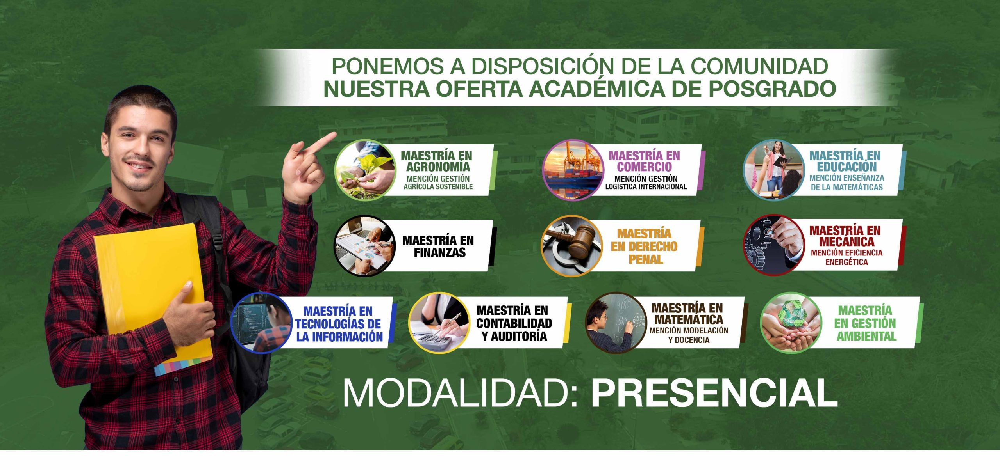
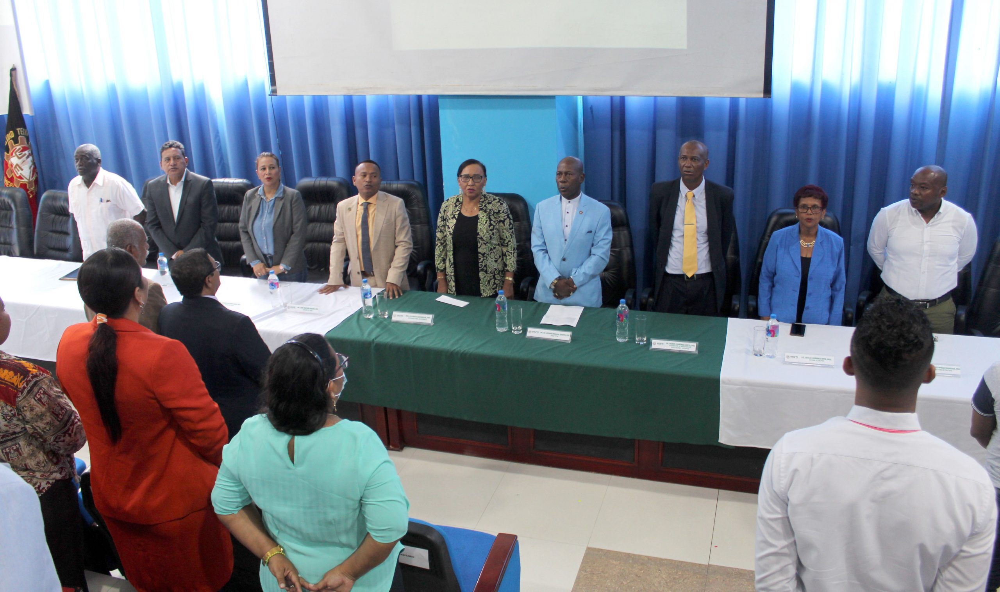
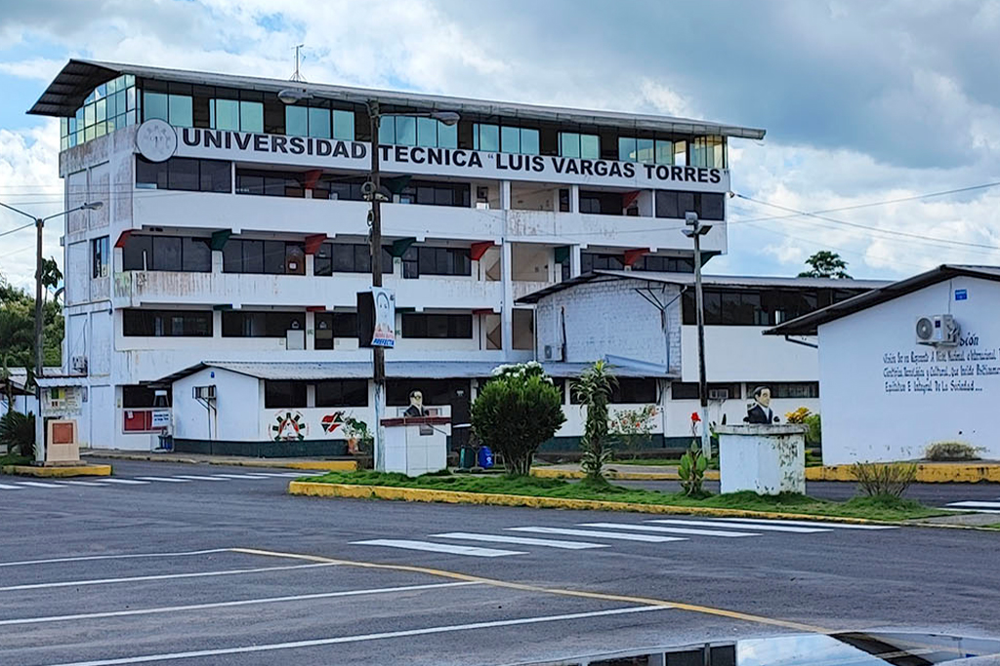

Proceso de evaluación de la calidad universitaria
Conoce los procesos de bienestar de la comunidad universitaria.
Aquí encontrarás: Formularios, sílabos, calendarios además de códigos y horarios de los Centros de Apoyo Académico
Este es el acceso a los sistemas para estudiantes, docentes y servidores universitarios.
La Sede Santo Domingo de los Tsáchilas ubicada en La Concordia, trabaja desde 1994 en la formación de profesionales de alto nivel con sentido de pertinencia, críticos, propositivos y humanistas enfocados en el desarrollo sostenible de la sociedad.
años de fundacion
Estudiantes
Libros fisicos en la biblioteca
Libros virtuales
Espacio creado con la finalidad de mantener a la comunidad universitaria informada de noticias, eventos y comunicados relacionados con su diario acontecer
“La comunicación tiene que ser la principal herramienta a emplearse en la academia, a fin de hacer de la relación docente - estudiante una interacción que permita el adecuado y efectivo proceso de transferencia de conocimientos”
“La sociedad actual demanda competencias que aporten al desarrollo y competitividad internacional.”

Lic. Jorge Perea Vaca, MSc.
La Universidad Técnica “Luis Vargas Torres” de Esmeraldas se ha convertido en el centro de educación superior público insigne de la Provincia y del norte del País, otorgando al alumnado beneficios como: inclusión social, gratuidad de la educación, diversidad académica y amplios ambientes de aprendizaje.